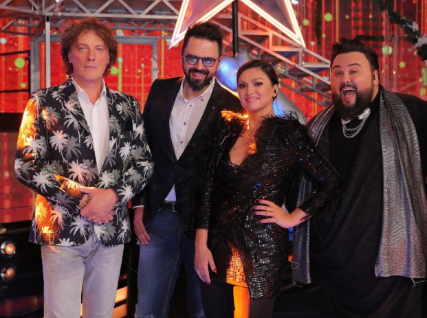

Koncerti
- 12.12.2015 SISAK (Supernova)
- 13.12.2015 ZAGREB (gost na koncertu Klinaca s Ribnjaka, Lisinski)
- 17.12.2015 SPLIT (gost na koncertu Klape Cambi Split, HNK Split)
- 20.12.2015 NEDELIŠĆE (Božićni koncert) i ZAGREB (RG Kids Club Radnička)
- 21.12.2015 METKOVIĆ (Gradsko kulturno središte, božićni koncert)
- 22.12.2015 KARLOVAC (Supernova)
- 23.12.2015 OPĆINA MARINA
- 26.12.2015 DOBRINJ (KRK)
Kliknite na lica poznatih ličnosti i saznajte tko su !
